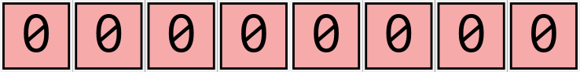
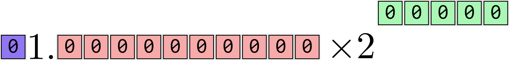
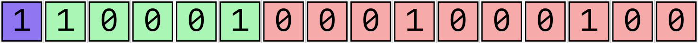
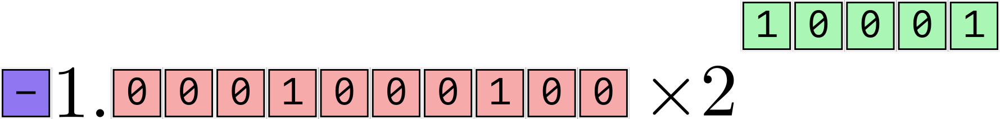
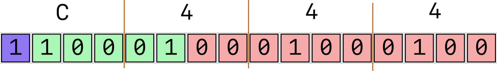

Lecture 07
E21 Computer Engineering Fundamentals
Test 1 8:30 — 8:55
- If you are done early you may leave and return by 9:00
How many ‘digits’ are needed to store a large number?
Determine how many ‘digits’/bits you need to represent the number one billion in:
Decimal
Answer:
1000000000
10 digits
Binary
Answer:
0b111011100110101100101000000000
30 bits.
Hexadecimal
Answer:
0x3B9ACA00
8 bits.
Range of positive / negative numbers

- With 8 bits, how many binary integers can be stored? 256
- Which 256 numbers should we choose?
- If we only care about positive numbers, we could choose
0,1,2, …,2551000,1001,1002, …,1255
- If we care about positive and negative numbers:
-1,0,1,2, …254-2,-1,0,1,2, …253-10,-9,-8,-7,-6, …245-128,-127,-126, …0…126,127
- Makes sense to evenly distribute your numbers around zero
- If we only care about positive numbers, we could choose
The Sign-Magnitude Representation
The sign-magnitude representation is one way to represent integers in binary.
The most significant bit is reserved for the sign. 1 \(\implies\) negative.
The number \(9\)
| Sign | \(2^7\) | \(2^6\) | \(2^5\) | \(2^4\) | \(2^3\) | \(2^2\) | \(2^1\) | \(2^0\) | |
|---|---|---|---|---|---|---|---|---|---|
0 |
0 |
0 |
0 |
0 |
1 |
0 |
0 |
1 |
The number \(-56\)
| Sign | \(2^7\) | \(2^6\) | \(2^5\) | \(2^4\) | \(2^3\) | \(2^2\) | \(2^1\) | \(2^0\) | |
|---|---|---|---|---|---|---|---|---|---|
1 |
0 |
0 |
1 |
1 |
1 |
0 |
0 |
0 |
Fixed Point Representation of numbers
A fixed point number has a ‘decimal point’ located at a fixed position in the place-value scheme.
Consider two different fixed point decimal representations of the number one hundred, both with 6 decimal digits.
- Decimal point fixed at position 3
100.000
- Decimal point fixed at position 2
0100.00
Questions to consider:
- What is the largest (+) number that can be shown using A and B ? A:
999.999B:9999.99 - What is the smallest difference between two numbers that can be represented using A and B ? A:
0.001B:0.01
A rudimentary ‘floating point’ number system
- With 6 digits and decimal point fixed in middle:
| Quantity | Value |
|---|---|
| Largest + Number | 999.999 |
| Smallest + Number | 000.001 |
| Increment | 000.001 |
| Pieces of info to store | six |
- With 6 digits and decimal point can float anywhere:
| Quantity | Value |
|---|---|
| Largest + Number | 999999. |
| Smallest + Number | .000001 |
| Increment | depends |
| Pieces of info to store | six + one |
A 6-digit decimal floating-point representation needs to tell you …
- What each of the 6 digits are.
- Possibilities: 0 to 9
- Where the decimal point is:
- 7 options
000000.00000.00000.00000.00000.00000.00000.000000
- 7 options
Instead … use ‘Scientific Notation’
Recall the scientific notation of numbers: \[-2.34 \times 10^5\]
- This conveys three pieces of information:
- The sign
- 3 digits for the number
- 1 digit for the exponent
- Note that the \(a \times 10^{b}\) structure is assumed and does not need to be stored every time the computer stores a number.
Standard (IEEE) Format for 16-bit floating-point binary numbers

- 1 bit stores the sign
- 10 bits store the number, known as the significand. \(1\) is assumed to be the 11th bit, but it is not stored.
- 5 bits store the exponent.
- Smallest 5-bit binary number
00000\(= 0\) and largest 5-bit binary number11111\(=\) 31 - To get negative exponents, we assume a bias in the exponent bits.
- Subtract fifteen from the exponent.
- Smallest 5-bit binary number
- The structure of the number is assumed; only the 16-bit content is stored in computer’s memory.
- Need 16 bits of memory to store this number.
Place Value Notation for numbers smaller than 1
- 1 is a special number in the place value system.
- A ‘decimal point’ — a more ecumenical name would be ‘fractional point’ — is needed to show any numbers smaller than 1.
- To interpret the number
003.0025,
| Place | \(10^2\) | \(10^{1}\) | \(10^{0}\) | \(.\) | \(10^{-1}\) | \(10^{-2}\) | \(10^{-3}\) | \(10^{-4}\) |
|---|---|---|---|---|---|---|---|---|
| Value | 0 |
0 |
3 |
. |
0 |
0 |
2 |
5 |
0 |
0 |
\(3\times 10^{0}\) | 0 |
0 |
\(2 \times 10^{-3}\) | \(5 \times 10^{-4}\) |
Interpreting a 16-bit binary float
With the IEEE format, the 16 bits

represent the number

which, in binary form, should be intepreted as \[-1.0001000100_2 \times 2^{(10001_2 \text{ minus fifteen})}\]
The exponent is 0b10001 minus fifteen, i.e., \(17 - 15 = 2\)
The significand is \[- \left( 1 \times 2^{0} + 1 \times 2^{-4} + 1 \times 2^{-8} \right) \]
\[ = - \left( 1 + \frac{1}{16} + \frac{1}{256} \right)\]
\[ = - \left( \frac{256}{256} + \frac{16}{256} + \frac{1}{256} \right) = - \frac{273}{256} = -1.066406250\]
So the number is \(-1.066406250 \times 2^{2} = \fbox{-4.265625}\)
Hex short-form
- Binary numbers are very long
- Hexadecimal is often used as a short form.
- A 16-bit binary number is a 4-bit hexadecimal number

- So the number
0b1100010001000100is often written as0xC444.